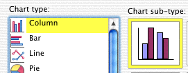

Frequency table in Excel
All graphical displays of discrete and categorical data are based on a frequency table. The diagram below shows an example of how a frequency table can be produced in Excel.
Drawing a bar chart in Excel
This is based on a frequency table. Drag over the frequency table (values and frequencies) then choose the command Insert > Chart.... In the resulting dialog box, select the following chart type.

Then click Finish and the bar chart should be added to your spreadsheet. The following chart sub-type draws a 3-dimensional version of the bar chart.
Drawing a pie chart in Excel
A pie chart is drawn in a similar way to a bar chart. Firstly the frequency table is selected with the mouse, then the command Insert > Chart... is chosen.
Clicking Finish will display the pie chart. There is also a chart sub-type to draw a 3-dimensional version of this pie chart.